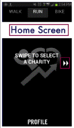
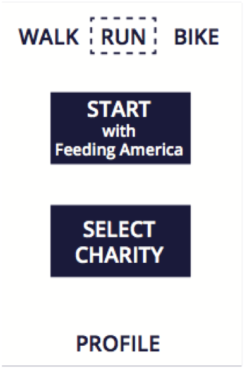
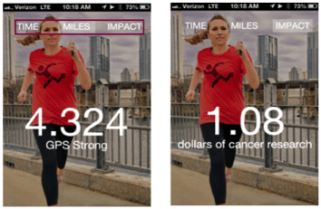
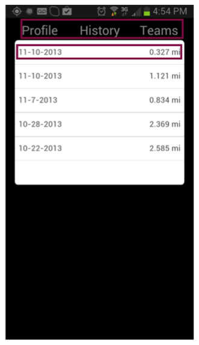

Project INRIX (2014-current)
INRIX IS Android and iOS applications that provide traffic, routes, travel times info. INRIX crowd sources data and allow users to report inaccurate traffic color and incidents along their itinerary.
ACTIVITIES DONE:
- moderated user research sessions to test prototypes created by the design team (including in-person and online interviews)
- run card sorting and pre-qualification survey to identify user persona
- created recommendation reports for different features designed by UI designers
- designed and tested error handling experience for Android application
My most recent exercise is - Error
Handling Experience feature.Let me tell
you about it.
This project is under NDA. I will
only describe main steps made in a
summary form.
WHAT ERRORS TO HANDLE?
Here is an example: user cannot use an app if Location Services are turned off in the phone settings. Sometimes user may experience network connection issues or rarely - errors returned by server.
ERROR HANDLING STUDY GOAL:
Design error handling in such a way
that errors are noticed only when they
are really important or may block
further user interaction with the
app.
For some of the screens, errors should
be drive-safe.
ACTIVITIES DONE:
- I run 2 series of tests on usertesting.com to understand if users understand reasons of errors and if errors placements work
- Designed different versions of error bars for the drive experience cases and tested it with users on drive simulator.
CHALLENGE:
One of the most challenging parts was to decide how to mock real drive experience and have similar to real driving mental load.
MAIN FINDING:
Persona driving habits need improvements: users from the same user group with the same goals and motivators may use the phone in different ways in the car and have different distractors.
TOOLS USED:
Adobe Illustrator, UserTesting.com, InVision prototyping tool, OpenDS driving simulator (http://www.opends.de/), Car wheel, pedal and phone cradle set.
Project: Microsoft Multilingual App Toolkit (MAT) (2013)
I participated in this project in terms
of "HCDE 517: Usability Studies" course. It
was part of the HCDE certificate
program
This project is under NDA. I can only
describe main steps made in a summary
form.
WHAT IS MAT?
MAT is a software extension to the Microsoft® Visual Studio® 2012 IDE that enables developers of Windows 8 Phone Apps and Windows 8 Store Apps to create additional language versions of their apps.
MAT STUDY QUESTION:
Is the initial MAT user experience easy enough that developers can accomplish a series of tasks required for a complete end-to-end localization scenario?
MAIN ACTIVITIES DONE:
- Together with other two team members designed test strategy to verify scenario flow
- Designed part of the user testing test plan focused on collecting quantitative data
- Together with
team participated in user testing of
the actual application:
- prepared a set of questions that will drive scenario testing
- invited 10 Microsoft MVPs (Most Valued Professionals) as users
- prepared questions for the interview and post-test survey
- played an Observer role using Morae manager app during testing
- Processed testing results and compiled the plan for improvements
- Presented results to MAT team members.
MAIN FINDINGS:
- Very first step “enabling the tool” blocked further scenario steps because 7 out of 10 users haven’t found a way to enable it.
- Developers used online help to resolve issues while working with tool, but MSDN.com - main help resourse, was obsolete.
- Users did not understand that the tool was embedded into the Visual Studio.
CHALLENGES:
Developers did not feel comfortable consulting help while being observed. While in daily life online help use is an integral part of their work day. I had to find a way to make them feel at ease.
RESULT:
New version of MAT was released and included feedback of this study
TOOLS USED:
Morae Manager
Project: “Charity Miles” mobile application Redesign (2014)
I participated in this project in terms of "HCDE 518: User-Centered Design " course. It was part of the HCDE certificate program.
WHAT IS CHARITY MILES?
CHARITY MILES is a fitness/donation Android and iOS app that allows users to earn money for charities while they walk, run, or bike.
CHARITY MILES STUDY QUESTION:
How to help to increase user base usage among current users?
ACTIVITIES DONE:
- Together with the team of four created main personas based on Market research (alexa.com) and designed a survey to identify users needs.
- I made my version of paper prototype and created user test plan for testing against different prototypes
- Processed test results and made design change calls
- Together with the team presented final prototype version.
MAIN FINDINGS:
There are three main motivators that strikes users to use the app:
- personal story that drives donation
- competitiveness with other users
- motivation to support personal physical activity
RESULTS:
Based on the recommendations I made after paper prototyping test session redesigned UI to address three motivation models.
RESULTS:
-
Select Charity screen
-
 Before
 After

After
- Now Charity can be saved as favorite to start from it. Added search by charity.
- Added search by charity.
-
Charity Details screen
-

Before

After
- Now added Charity description and video.
- Added top 5 to resolve lack of competitiveness motivation.
-
Tracking Screen
-
 Before

After
- Now one of the top issues is resolved: ability to see different tracking types
-
Profile Screen
-
 Before

After

After
- Now resolved the issue of viewing money raised for charity individually.
- By adding graphs on the Profile screen addresses motivation for personal activity and donation.
Last iteration of paper prototype testing increased ease of use metric for major tasks and improved findability for main functionality.
Project: “Comprehensive revenue solutions” (CRS) web site Redesign (2014)
I participated in this project in terms of "HCDE 537: User-Centered Web Design" course. It was part of the HCDE certificate program.
WHAT IS CRS?
CRS is a web interface that helps target
small business health care providers to
find a reliable, accurate, secure,
inexpensive solution for optimizing
businesses processing.
Services may include: medical billing or
electronic medical records.
CRS STUDY QUESTIONS:
- Build and design a “High Impact” – “Low Touch” Solution
- Create a clear & understandable value prop of services
- Increase prospective customer engagement
CRS STUDY QUESTIONS:
- Together with the team of four made competitive analysis of similar websites
- Another team member interviewed current representative users
- Together with team run card sorting exercise
- Together with team did usability testing
- I designed my version of prototype and compiled the final prototype with the team
- Designed Website digital prototype (made responsive design with HTML/CSS)
-
MAIN RESULTS:
- Icons for navigating were used the most, made them a focal point of the web side
- Unhide services description to front
CHALLENGES:
- Card Sorting results were not as hoped
- Subject matter needed some research
SOME EXAMPLES: